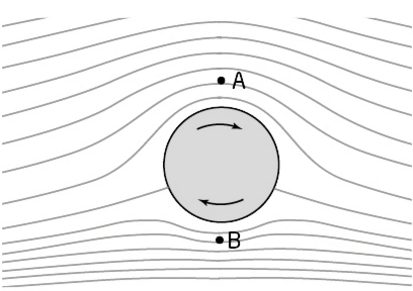
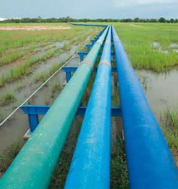
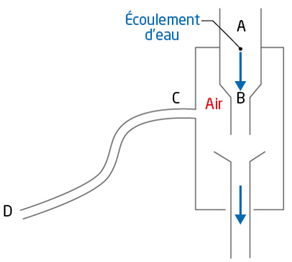
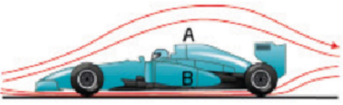
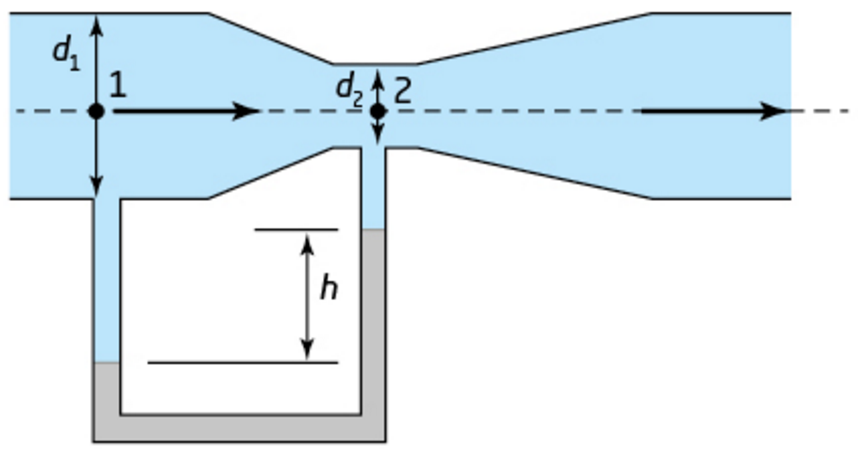
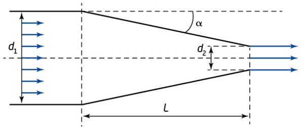
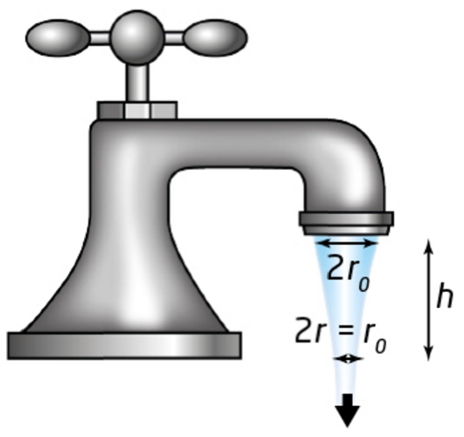
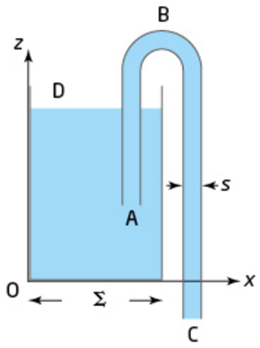

Pression et force pressante
Un fluide au repos exerce sur toute paroi en contact avec lui des actions mécaniques, modélisées par une force pressante F, perpendiculaire à la paroi et dirigée du fluide vers la paroi.
- Direction de F : perpendiculaire à la paroi.
- Sens de F : du fluide vers la paroi.
- Valeur (en N) : F = P × S, avec P (en Pa) la pression du fluide et S (en m²) la surface de la paroi en contact avec le fluide.
Loi fondamentale de la statique des fluides
Dans un fluide incompressible au repos, la pression augmente avec la profondeur. Pour deux points A et B d'un même fluide, aux altitudes zA et zB :
Activité 1 — Le nautile
Le nautile, mollusque marin, régule sa profondeur en modifiant la quantité de gaz contenue dans les loges de sa coquille, ce qui fait varier son volume immergé effectif et donc la poussée qu'il subit. Document p326.
Que représente la poussée d'Archimède ?
Tout objet plongé dans un fluide (liquide ou gaz) subit, de la part de ce fluide, des actions mécaniques modélisées par des forces pressantes dont la valeur F = P×S augmente avec la pression P du fluide (et l'aire S de la surface de l'objet).
D'après la loi fondamentale de la statique des fluides (ΔP = ρ.g.Δz), la pression exercée par un fluide augmente avec la profondeur d'immersion.
Ainsi, les forces pressantes qui s'exercent sur la surface d'un objet immergé ne se compensent pas parfaitement : elles sont plus intenses sur le bas de l'objet que sur le haut. Il en résulte une action mécanique résultante, verticale et orientée vers le haut : la poussée d'Archimède π.
Expression vectorielle de la poussée d'Archimède
Tout corps immergé, tout ou en partie, dans un fluide, subit de la part du fluide une force verticale, dirigée vers le haut, de valeur égale au poids du volume de fluide déplacé :
Les deux forces qui s'exercent sur le solide sont :
- le poids P = m · g, qui dépend directement de la masse m de l'objet : c'est pour ça que le curseur « Masse de l'objet » fait varier P ;
- la poussée d'Archimède π = − ρf · Vi · g, qui ne dépend que de la masse volumique du fluide ρf et du volume immergé Vi — la masse de l'objet n'apparaît pas dans cette expression. C'est pour ça que le curseur « Masse » n'a aucun effet sur π : à volume immergé fixé, deux objets de masses différentes subissent exactement la même poussée.
Le solide flotte ou coule selon la comparaison des valeurs de ces deux forces : π > P (l'objet remonte), π < P (il coule), π ≈ P (il reste en équilibre). Autrement dit, à fluide et volume immergé donnés, c'est la masse de l'objet qui décide de son comportement.
Exercice — Calculer une poussée d'Archimède
- Identifier le fluide et sa masse volumique ρf (attention aux unités : kg/m³, et convertir les volumes en m³).
- Identifier le volume immergé V (tout le volume si le corps est totalement immergé, une partie sinon).
- Calculer π = ρf × V × g.
- Comparer π au poids P = m × g pour prévoir si l'objet flotte, coule, ou reste en équilibre.
Animation interactive — Peser un objet dans l'air puis dans l'eau
Ouvre l'animation ci-dessous : un solide est suspendu à un dynamomètre. Note le poids indiqué dans l'air, puis immerge complètement le solide dans le liquide et note le poids apparent indiqué par le dynamomètre.
Exercice — Exploiter la pesée dans l'air et dans l'eau
Le dynamomètre « voit » moins de poids une fois le solide immergé car le fluide exerce en plus la poussée d'Archimède, vers le haut : à l'équilibre, P' = P − π, donc π = P − P'.
Activité 2 — Surveillance des cours d'eau
Les hydrologues mesurent en continu le débit des rivières pour prévenir crues et étiages. Simulation utile : phet.colorado.edu — pression et écoulement des fluides.
Régime permanent (ou stationnaire)
L'écoulement d'un fluide est modélisé par des lignes de courant, qui représentent les trajectoires des particules de fluide en mouvement.
On dit qu'un fluide s'écoule en régime permanent lorsque les lignes de courant n'évoluent pas au cours du temps : la vitesse v en un point quelconque du fluide conserve alors les mêmes caractéristiques au cours du temps.
Activité 3 — Athérosclérose
Le rétrécissement d'une artère par une plaque d'athérome modifie localement la vitesse du sang, avec des conséquences sur la pression artérielle (voir l'effet Venturi, onglet C).
Débit volumique
Le débit volumique Q d'un fluide représente le volume de fluide qui traverse une section S du conduit par unité de temps.
Relation entre débit et vitesse
Si un fluide traverse à la vitesse v la section d'aire S d'un conduit pendant une durée Δt, le volume V ayant traversé S s'écrit V = S×v×Δt, d'où :
Exercice guidé — Redémontrer la relation Q = v×S
Exercice — Débit d'un robinet
Conservation du débit volumique
Lors de l'écoulement d'un fluide incompressible en régime permanent, il n'y a pas de perte de matière : le débit volumique Q se conserve le long de l'écoulement. Donc en tous points A et B :
Exercice — Rétrécissement d'une canalisation
TP virtuel — « Pression et écoulement des fluides » (PhET)
Cette simulation comporte trois onglets (Pression / Écoulement / Château d'eau) qui permettent de retrouver, en les manipulant, la quasi-totalité des notions de la séquence : loi de la statique des fluides, conservation du débit, effet Venturi et relation de Bernoulli.
🖥️ Ouvrir la simulation PhET — Pression et écoulement des fluides
Partie 1 — Onglet « Pression » (revoir la loi de la statique des fluides)
Protocole : place le capteur de pression (jauge) à différentes profondeurs dans le bassin rempli d'eau. Note comment la valeur affichée évolue. Puis change la nature du fluide (eau → essence → « miel ») en conservant la même profondeur, et observe à nouveau. Enfin, essaie de retirer l'atmosphère au-dessus du bassin.
Partie 2 — Onglet « Écoulement / Flow » (conservation du débit & effet Venturi)
Protocole : à l'aide des poignées jaunes, resserre le tuyau en son milieu. Place un ou plusieurs capteurs de vitesse (speedomètres) et un ou deux capteurs de pression le long du tuyau, avant, dans, puis après le rétrécissement. Coche éventuellement « débitmètre » (flux meter) pour vérifier le débit à différents endroits.
Exercice — Exploiter une mesure de la simulation
Partie 3 — Onglet « Château d'eau / Water Tower » (relation de Bernoulli, v = √(2gh))
Protocole : clique sur « Fill » pour remplir le réservoir, puis ouvre le trou (le petit cache rouge) en bas de la cuve. Utilise le mètre et le capteur de vitesse pour mesurer la vitesse d'éjection de l'eau juste à la sortie du trou. Fais ensuite descendre le réservoir (ou laisse le niveau d'eau baisser) et observe l'effet sur la vitesse et la portée du jet.
Relation de Bernoulli
Pour l'écoulement d'un fluide incompressible en régime permanent et sans frottement (donc sans échange d'énergie ni par travail ni par transfert thermique), la relation de Bernoulli modélise les évolutions de la pression P, de la vitesse v et de l'altitude z le long d'une ligne de courant :
- Point A : à la surface libre du réservoir, altitude zA = h, pression PA = Patm, vitesse vA ≈ 0 (le réservoir est très large : SA ≫ SB, donc vA ≪ vB).
- Point B : à la sortie du robinet, altitude zB = 0, pression PB = Patm (à l'air libre).
- Bernoulli : Patm + 0 + ρgh = Patm + ½ρvB² + 0 ⟹ vB = √(2gh).
Exercice p.332 n°30 — Vitesse en sortie de château d'eau
Effet Venturi
Pour un écoulement en régime permanent, la pression P d'un fluide diminue lorsque sa vitesse v augmente (et inversement) : c'est l'effet Venturi.
Dans le cas d'un conduit horizontal (zA = zB), la relation de Bernoulli s'écrit P + ½ρv² = constante, d'où pour deux points A et B :
Exercice p.333 n°32 — Dépression dans un rétrécissement
Vidéo « Le tonneau percé » : phymain.unisciel.fr/le-tonneau-perce
Activité — Simulateur réservoir & écoulement (Hatier)
Ce simulateur permet d'étudier la statique et l'écoulement d'un fluide incompressible. Il permet de retrouver, en le manipulant, l'essentiel des notions de la séquence : loi de la statique des fluides, débit, conservation du débit et effet Venturi.
Activité 1 : Le Nautile
Depuis 1984, le Nautile, un sous-marin habité de l'IFREMER, est à l'origine de nombreuses découvertes scientifiques (voir photo ci-contre : images sous-marines du sous-marin Nautile pendant la mission ESSNAUT 2016).
Pour plonger, le Nautile est doté de deux ballasts de 600 litres chacun, c'est-à-dire de réservoirs qui peuvent se remplir d'eau ou d'air.


a. Expliquer ce que représente le produit ρV dans l'expression πA = ρVg et faire le lien avec le principe d'Archimède décrit dans le DOC.1.
b. D'après le DOC.2, effectuer le bilan des forces exercées sur l'objet quand il est dans l'air puis quand il est entièrement immergé dans l'eau.
c. En déduire l'expression de la norme de la poussée d'Archimède πA, avec les notations données dans le PROTOCOLE : πA = P − Pa
Mettre en œuvre l'expérience photographiée dans le DOC.2 avec différents objets.
a. Les mesures réalisées sont-elles compatibles avec l'expression de la norme de la poussée d'Archimède ? Justifier la réponse.
b. Expliquer le rôle des ballasts dans un sous-marin.
Activité 2 : Surveillance des cours d'eau
Afin de prévoir les crues, les rivières et les fleuves sont étudiés en permanence.


Comparer, en justifiant, les valeurs des vitesses d'écoulement du fluide v1 et v2 présentées dans les données et juger de la cohérence de l'allure des lignes de courant.
a. D'après les données, établir la relation entre le débit volumique Dv d'un fluide, la vitesse d'écoulement v et l'aire S de la section droite traversée. Vérifier l'homogénéité de la relation.
b. En modélisant la rivière, l'Ill, par un conduit de section rectangulaire de hauteur h = 1,11 m et de largeur L = 40,0 m, calculer la vitesse d'écoulement v de l'Ill le 6 août à 00 h quand le débit volumique vaut Dv = 35,38 m³·s⁻¹.
Réaliser une synthèse permettant d'expliquer comment décrire un écoulement, en mettant en valeur les grandeurs physiques mesurables et leurs relations.
Activité 3 : Athérosclérose SVT
L'athérosclérose est une maladie chronique caractérisée par l'apparition de dépôts graisseux dans les artères qui perturbent la circulation du sang. En première approximation, le sang peut être considéré comme un fluide incompressible qui s'écoule en régime permanent dans une canalisation.

Une animation permet de simuler l'écoulement en régime permanent d'un fluide incompressible dans une canalisation. Réglages disponibles : ajustement du débit, mesure de la vitesse d'écoulement, mesure de la pression du fluide, modification de l'aire de la section de la conduite.

a. Utiliser la simulation pour vérifier la conservation du débit volumique du fluide et la relation de Bernoulli.
b. Exprimer puis calculer la vitesse d'écoulement du sang vn dans une artère normale puis celle du sang vo dans une artère obstruée.
c. À l'aide de la DONNÉE 1, exprimer puis calculer la dépression Pn − Po au niveau de l'étranglement d'une personne allongée (zn = zo).
Expliquer les dangers liés aux étranglements des artères dus aux dépôts graisseux.
1.a. La simulation permet de mesurer v et l'aire S de la conduite à deux endroits différents : le produit v×S reste constant tout au long de l'écoulement, ce qui vérifie la conservation du débit volumique. En relevant simultanément la pression, on observe qu'aux points de même altitude, la pression est plus faible là où la vitesse est plus grande (rétrécissement de la conduite), conformément à la relation de Bernoulli.
1.b. Dv = 1,44 L·min⁻¹ = 1,44×10⁻³ m³ / 60 s = 2,40×10⁻⁵ m³·s⁻¹.
vn = Dv/Sn = 2,40×10⁻⁵ / (0,80×10⁻⁴) = 0,30 m·s⁻¹.
vo = Dv/So = 2,40×10⁻⁵ / (0,20×10⁻⁴) = 1,2 m·s⁻¹.
1.c. Avec zn = zo, la relation de Bernoulli devient Pn + ½ρvn² = Po + ½ρvo², soit Pn − Po = ½ρ(vo² − vn²).
Pn − Po = 0,5 × 1,07×10³ × (1,2² − 0,30²) = 0,5 × 1070 × 1,35 ≈ 7,2×10² Pa.
2. Au niveau de l'étranglement, la vitesse du sang augmente fortement et la pression y chute (Po < Pn), ce qui fragilise localement la paroi artérielle et peut favoriser sa rupture ou son affaissement. Par ailleurs, un dépôt graisseux qui se détache peut circuler dans le sang jusqu'à obstruer complètement un vaisseau plus étroit (thrombose), avec un risque d'AVC ou d'infarctus selon l'organe touché.
Activité 4 : Kitesurfing
Le détroit des bouches de Bonifacio, situé entre la Corse et la Sardaigne, est prisé par les kitesurfeurs : grâce à l'effet Venturi, les vents y dépassent régulièrement les 40 km·h⁻¹.


a. En se basant sur la conservation du débit volumique, expliquer pourquoi la vitesse de l'écoulement de l'air augmente au niveau d'un étranglement.
b. D'après les DONNÉES, justifier pourquoi la pression de l'air est plus faible au niveau de l'étranglement.
Réaliser des mesures de pression de l'air à différents endroits du tube de Venturi. Reporter les résultats expérimentaux dans un tableau.
À l'aide de l'expression v1 = √2(P1 − P2)ρ(S1²/S2² − 1) découlant de la relation de Bernoulli et de la conservation du débit volumique, évaluer la vitesse d'écoulement de l'air au niveau de la sortie du tube de Venturi et la comparer à la valeur mesurée avec un anémomètre.
Réaliser une synthèse permettant d'expliquer l'effet Venturi (variation de vitesse et de pression) dans la modélisation réalisée en classe, puis dans le détroit des bouches de Bonifacio.
1.a. Le débit volumique Dv = v×S se conserve le long de l'écoulement. Au niveau de l'étranglement, l'aire S de la section diminue ; pour que le produit v×S reste constant, la vitesse v doit augmenter.
1.b. L'écoulement étant horizontal (z₁ = z₂), la relation de Bernoulli se réduit à P + ½ρv² = constante. Comme la vitesse v augmente au niveau de l'étranglement, le terme ½ρv² augmente : pour que la somme reste constante, la pression P doit diminuer. C'est cette dépression localisée qui caractérise l'effet Venturi.
2. Cette question dépend de la manipulation réelle du tube de Venturi et de la soufflerie : elle n'a pas de résultat chiffré unique. Méthode attendue : construire un tableau à deux colonnes (position/section S le long du tube ; pression P mesurée au pressiomètre), et relever au moins trois points (entrée du tube, étranglement, sortie) pour un même débit de soufflerie. On doit observer une pression minimale au niveau de la section la plus étroite.
3. Méthode : repérer dans le tableau de mesures les couples (P₁, S₁) à l'entrée et (P₂, S₂) à la sortie du tube, convertir toutes les grandeurs en unités SI, puis calculer v₁ = √[2(P₁−P₂) / (ρ(S₁²/S₂² − 1))] avec ρ = 1,20 kg·m⁻³. On compare ensuite cette valeur théorique à la vitesse v₂ mesurée directement à l'anémomètre en sortie de tube : un bon accord (aux incertitudes de mesure près) valide le modèle de Bernoulli pour cet écoulement d'air.
4. Dans les deux situations (tube de Venturi et détroit de Bonifacio), un rétrécissement de la section d'écoulement impose, par conservation du débit volumique, une augmentation locale de la vitesse du fluide. La relation de Bernoulli impose alors, à altitude constante, une diminution corrélée de la pression au niveau de cet étranglement. Le tube de Venturi modélise en classe, à petite échelle et avec de l'air propulsé par une soufflerie, exactement le phénomène qui accélère le vent entre les reliefs de part et d'autre du détroit des bouches de Bonifacio, expliquant les rafales recherchées par les kitesurfeurs.
Exercice 15 : Calculer une norme
Une barque flotte grâce à la poussée d'Archimède.
a. Calculer la norme de la poussée d'Archimède qui s'exerce sur la barque dont la partie immergée a un volume V = 2,0 m³.
b. Expliquer qualitativement l'origine de la poussée d'Archimède.
a. π = ρeau × V × g = 1000 × 2,0 × 9,8 = 1,96×10⁴ N ≈ 2,0×10⁴ N.
b. La pression d'un fluide augmente avec la profondeur. Les forces pressantes exercées par l'eau sur le dessous de la partie immergée de la barque sont donc plus intenses que celles exercées sur le dessus : leur résultante, non nulle, est une force verticale dirigée vers le haut — la poussée d'Archimède.
Exercice 16 : Comparer des forces
Un ballon de football a une masse m = 450 g et un volume V = 5,5 L.
Exprimer puis calculer la norme de son poids ainsi que celle de la poussée d'Archimède qui s'exerce sur lui lorsqu'il est totalement immergé dans l'air. Conclure.
Poids : P = m×g = 0,450 × 9,8 ≈ 4,4 N.
Poussée d'Archimède : π = ρair × V × g = 1,20 × 5,5×10⁻³ × 9,8 ≈ 6,5×10⁻² N.
Conclusion : la poussée d'Archimède est environ 70 fois plus faible que le poids : elle est totalement négligeable devant le poids pour un objet immergé dans l'air.
Exercice 18 : Établir un bilan des forces
Une balle de ping-pong de masse m = 2,3 g et de rayon r = 1,9 cm est lâchée sans vitesse initiale. Les frottements sont supposés négligeables.
a. Établir le bilan des forces qui s'exercent sur la balle.
b. Exprimer puis calculer les normes de chaque force, les comparer et conclure.
a. Deux forces s'exercent sur la balle : son poids P (vertical, vers le bas) et la poussée d'Archimède π exercée par l'air (verticale, vers le haut).
b. Volume de la balle : V = (4/3)×π×r³ = (4/3)×π×(1,9×10⁻²)³ ≈ 2,87×10⁻⁵ m³.
Poids : P = m×g = 2,3×10⁻³ × 9,8 ≈ 2,3×10⁻² N.
Poussée d'Archimède : π = ρair × V × g = 1,20 × 2,87×10⁻⁵ × 9,8 ≈ 3,4×10⁻⁴ N.
Conclusion : π représente environ 1,5 % de P, elle est donc négligeable devant le poids. On peut donc assimiler le mouvement de la balle à une chute libre.
Exercice 22 : Calculer un débit volumique
Un robinet ouvert laisse couler 1,5 L d'eau par minute. L'aire de la section du jet en sortie de robinet vaut S = 1,0 cm².
a. Exprimer puis calculer le débit volumique du jet.
b. Exprimer puis calculer la vitesse d'écoulement de l'eau en sortie de robinet.
a. Q = V/t = 1,5×10⁻³ / 60 ≈ 2,5×10⁻⁵ m³/s (soit 1,5 L/min).
b. Q = v×S ⟹ v = Q/S = 2,5×10⁻⁵ / 1,0×10⁻⁴ = 0,25 m/s.
Exercice 23 : Calculer une dépression
Un écoulement horizontal d'air est initialement à la vitesse v1 = 5,0 m·s⁻¹ dans une section droite de conduit d'aire S1 = 2,0 cm². Suite à un étranglement, la section droite de la seconde partie du conduit a une aire S2 = 1,0 cm².
a. Exprimer puis calculer la vitesse v2 de l'écoulement de l'air dans la seconde partie du conduit.
b. Exprimer puis calculer la dépression P1 − P2 résultant de ce changement de section.
a. Conservation du débit : v1×S1 = v2×S2 ⟹ v2 = v1×S1/S2 = 5,0 × 2,0/1,0 = 10,0 m/s.
b. P1 − P2 = ½×ρair×(v2² − v1²) = 0,5 × 1,20 × (10,0² − 5,0²) = 0,5 × 1,20 × 75 = 45 Pa.
Exercice 25 : Étudier une différence d'altitude
Un écoulement d'eau vertical s'effectue à vitesse constante dans une section droite de conduit d'aire S = 1,0 cm². Une dépression est observée quand le fluide passe de l'altitude z1 = 0 m à l'altitude z2 = 5,0 m.
Exprimer puis calculer la dépression P1 − P2 observée dans le fluide entre ces deux altitudes.
La relation de Bernoulli s'écrit P1 + ρgz1 + ½ρv1² = P2 + ρgz2 + ½ρv2². La vitesse étant constante (v1 = v2, la section ne changeant pas), les termes cinétiques s'annulent, d'où : P1 − P2 = ρg(z2 − z1).
Application numérique : P1 − P2 = 1,0×10³ × 9,8 × (5,0 − 0) = 4,9×10⁴ Pa.
Exercice 26 : Calculer une vitesse d'éjection de vidange
La vidange d'un réservoir d'eau est représentée ci-contre. La section de l'ouverture de vidange s est très petite devant la surface libre S du liquide, ce qui permet en première approximation de supposer la surface libre du liquide immobile.
Exprimer puis calculer la vitesse d'écoulement du liquide par la section s pour h0 = 1,0 m.
Entre la surface libre (pression atmosphérique Patm, altitude h0, vitesse quasi nulle car S ≫ s) et l'orifice de vidange (pression atmosphérique Patm, altitude 0, vitesse v), la relation de Bernoulli donne : Patm + ρgh0 + 0 = Patm + 0 + ½ρv². D'où v = √(2gh0) (relation de Torricelli).
Application numérique : v = √(2 × 9,8 × 1,0) = √19,6 ≈ 4,4 m/s.
Exercice 24 : Mesurer un débit volumique 🐍 Python
La mesure du débit volumique Dv de l'écoulement de l'eau dans une burette graduée est obtenue en mesurant la durée d'écoulement Δt pour qu'un volume V d'eau s'écoule.
a. L'extrait de code Python ci-dessous est issu d'un programme permettant de déterminer le résultat de la mesure du débit volumique Dv grâce à la simulation d'un processus aléatoire. En s'appuyant sur les lignes 10 et 11 de l'extrait de ce code, exprimer les résultats de la mesure de la durée d'écoulement Δt en seconde et du volume V d'eau qui s'écoule de la burette en millilitre.
b. Rappeler l'expression du débit volumique Dv en fonction de Δt et V. Indiquer la ligne de code dans laquelle cette expression intervient et expliquer brièvement ce que permettent de réaliser les instructions de cette ligne.
c. Expliquer brièvement ce que permettent de réaliser les lignes qui définissent la fonction Alea et la boucle de simulation du programme.
d. Le résultat de l'exécution du programme est le suivant : Dv = 1.2407582572815378e-06 m³/s, u(Dv) = 9.285208653863012e-09 m³/s. Exprimer le résultat de la mesure du débit volumique Dv ainsi que l'incertitude-type associée.
Complète la partie surlignée en jaune (affichage du résultat), puis clique sur Exécuter. Le reste du code — dont l'histogramme — est déjà fonctionnel.
import numpy as np
from matplotlib import pyplot as plt
# Listes L=[valeur,incertitude-type] en unité SI
delta_t=[40.3,0.3] # durée (en s)
V_burette=[50.0e-6,0.05e-6] # Volume de la burette en m³
def Alea(L):
#Tirage entre -infini et +infini (loi normale)
tirage=np.random.normal()
return L[0]+L[1]*tirage
Dv=[]
Iteration=100000
for i in range(Iteration) :
Alea_Dv=Alea(V_burette)/(Alea(delta_t))
Dv.append(Alea_Dv)
Moy_Dv=np.mean(Dv)
u_Dv=np.std(Dv,ddof=1)
#Affichage brut
# Affichage de l'histogramme de la distribution simulée pour le débit volumique
plt.hist(Dv,bins=50,color='blue',edgecolor='black')
plt.ticklabel_format(axis='x',style='scientific',scilimits=(-6,-6))
plt.xlabel('Débit volumique (en m$^3\cdot$ s$^{-1}$)')
plt.ylabel('Effectif')
plt.title('Pour %d'%Iteration+ ' itérations')
plt.show()
Version confirmé(e) : complète les deux parties surlignées en jaune (affichage du résultat et histogramme), puis clique sur Exécuter.
import numpy as np
from matplotlib import pyplot as plt
# Listes L=[valeur,incertitude-type] en unité SI
delta_t=[40.3,0.3] # durée (en s)
V_burette=[50.0e-6,0.05e-6] # Volume de la burette en m³
def Alea(L):
#Tirage entre -infini et +infini (loi normale)
tirage=np.random.normal()
return L[0]+L[1]*tirage
Dv=[]
Iteration=100000
for i in range(Iteration) :
Alea_Dv=Alea(V_burette)/(Alea(delta_t))
Dv.append(Alea_Dv)
Moy_Dv=np.mean(Dv)
u_Dv=np.std(Dv,ddof=1)
#Affichage brut
# Affichage de l'histogramme de la distribution simulée pour le débit volumique
a. Ligne 10 : delta_t=[40.3,0.3] → la durée d'écoulement mesurée vaut Δt = 40,3 s, avec une incertitude-type u(Δt) = 0,3 s. Ligne 11 : V_burette=[50.0e-6,0.05e-6] → en m³, 50,0×10⁻⁶ m³ = 50,0 mL (1 m³ = 10⁶ mL), avec une incertitude-type u(V) = 0,05×10⁻⁶ m³ = 0,05 mL.
b. Dv = V/Δt. Cette expression intervient dans l'instruction Alea_Dv=Alea(V_burette)/(Alea(delta_t)) : à chaque itération, elle tire aléatoirement une valeur de V et une valeur de Δt (selon une loi normale centrée sur la valeur mesurée, d'écart-type l'incertitude-type), puis calcule le débit volumique correspondant V/Δt, qui est ensuite stocké dans la liste Dv.
c. Ces lignes définissent d'abord la fonction Alea (tirage d'une valeur selon une loi normale de moyenne L[0] et d'écart-type L[1]), puis réalisent une méthode de Monte-Carlo : une boucle répète 100 000 fois le tirage aléatoire de V et Δt et le calcul du débit volumique associé, chaque résultat étant ajouté à la liste Dv ; enfin, la valeur moyenne de cette distribution simulée (estimation de Dv) et son écart-type (estimation de l'incertitude-type u(Dv)) sont calculés.
d. L'incertitude-type ne conserve qu'un seul chiffre significatif (son premier chiffre, 9, n'étant pas 1) : u(Dv) ≈ 9×10⁻⁹ m³·s⁻¹. La valeur de Dv est arrondie au même ordre de grandeur : le résultat de la mesure s'écrit Dv = (1,241 ± 0,009)×10⁻⁶ m³·s⁻¹.
Programme complet (version corrigée) :
import numpy as np
from matplotlib import pyplot as plt
# Listes L=[valeur,incertitude-type] en unité SI
delta_t=[40.3,0.3] # durée (en s)
V_burette=[50.0e-6,0.05e-6] # Volume de la burette en m³
def Alea(L):
#Tirage entre -infini et +infini (loi normale)
tirage=np.random.normal()
return L[0]+L[1]*tirage
Dv=[]
Iteration=100000
for i in range(Iteration) :
Alea_Dv=Alea(V_burette)/(Alea(delta_t))
Dv.append(Alea_Dv)
Moy_Dv=np.mean(Dv)
u_Dv=np.std(Dv,ddof=1)
#Affichage brut
print('\n')
print('Débit volumique Dv =', Moy_Dv,' m³/s')
print('Incertitude-type : u(Dv) =',u_Dv,' m³/s')
print('\n')
print('Le résultat de la mesure est :')
print('Dv =','%.3e'%Moy_Dv,' m³/s',
'avec l\'incertitude-type u(Dv) =','%.0e'%u_Dv,' m³/s')
# Affichage de l'histogramme de la distribution simulée pour le débit volumique
plt.hist(Dv,bins=50,color='blue',edgecolor='black')
plt.ticklabel_format(axis='x',style='scientific',scilimits=(-6,-6))
plt.xlabel('Débit volumique (en m$^3\cdot$ s$^{-1}$)')
plt.ylabel('Effectif')
plt.title('Pour %d'%Iteration+ ' itérations')
plt.show()
(Ce programme prof est fourni ici à titre indicatif : il n'est pas téléchargeable.)
Exercice 27 : Étudier des lignes de courant
Au football, une frappe enroulée consiste à faire tourner le ballon sur lui-même. Cet effet, dit « effet Magnus », rend les trajectoires imprévisibles. L'allure des lignes de champ, vues du dessus, de l'écoulement de l'air autour du ballon est donnée ci-contre.

a. Citer le référentiel dans lequel est décrit l'écoulement de l'air.
b. Comparer les vitesses d'écoulement de l'air aux points A et B.
c. Comparer les pressions aux points A et B et expliquer l'effet sur le ballon.
a. L'écoulement est décrit dans le référentiel lié au ballon : sur le schéma, le ballon est représenté immobile et ce sont les lignes de courant de l'air qui défilent autour de lui.
b. Les lignes de courant sont plus resserrées au voisinage de B qu'au voisinage de A. Or, pour un fluide incompressible, un resserrement des lignes de courant traduit une vitesse d'écoulement plus grande. On en déduit que la vitesse de l'air en B est supérieure à la vitesse de l'air en A.
c. D'après la relation de Bernoulli le long d'une ligne de courant (A et B étant à la même altitude), la pression est la plus faible là où la vitesse est la plus grande : la pression en B est donc inférieure à la pression en A. Cette différence de pression entre le dessus (A) et le dessous (B) du ballon crée une force résultante non nulle, dirigée de A vers B, qui dévie la trajectoire du ballon perpendiculairement à son mouvement de translation : c'est l'effet Magnus, responsable de la trajectoire courbe de la « frappe enroulée ».
Exercice 30 : Vitesse d'écoulement dans une conduite d'eau
Dans une conduite d'eau, une sonde Pitot, immobile dans le référentiel terrestre, mesure une pression différentielle PA − PB = 37 Pa. Le point A correspond au point d'arrêt de la sonde, où l'écoulement est stoppé (vitesse nulle), tandis qu'au point B l'eau continue de s'écouler à la vitesse v de l'écoulement non perturbé, à la même altitude qu'en A.

Donnée : masse volumique de l'eau : ρ = 1000 kg·m⁻³.
a. Exprimer la différence de pression PA − PB en fonction de la vitesse d'écoulement v de l'eau et de la masse volumique ρ de l'eau.
b. Exprimer puis calculer la vitesse d'écoulement v de l'eau dans la conduite.
a. La relation de Bernoulli entre A (vA = 0) et B (vB = v), à la même altitude, s'écrit : PA + 0 = PB + ½ρv². D'où PA − PB = ½ρv².
b. En isolant v : v = √(2(PA − PB)/ρ). Application numérique : v = √(2 × 37 / 1000) = √0,074 ≈ 0,27 m/s.
Exercice 32 : Trompe à eau
En travaux pratiques, on utilise une trompe à eau lors d'un séchage sur Büchner. Le rétrécissement du tube où circule l'eau provoque une dépression qui aspire l'air à travers l'ouverture C.

Le diamètre de la conduite vaut dA = 12 mm en A, et dB = 5,0 mm en B. La distance AB = 5,0 cm est assez faible pour que les effets de la gravité soient négligeables.
a. Nommer l'effet qui relie l'apparition d'une différence de pression à une variation de vitesse.
b. Exprimer puis calculer la dépression PA − PB en fonction du débit volumique Dv de l'eau, pour Dv = 6,0 L·min⁻¹.
a. C'est l'effet Venturi, conséquence de la relation de Bernoulli : dans un écoulement horizontal, une augmentation de vitesse s'accompagne d'une diminution de pression.
b. Conversion : Dv = 6,0 L·min⁻¹ = 1,0×10⁻⁴ m³·s⁻¹.
Vitesses : vA = Dv/SA = Dv/(πdA²/4) = 1,0×10⁻⁴/(π×(12×10⁻³)²/4) ≈ 0,88 m/s.
vB = Dv/SB = Dv/(πdB²/4) = 1,0×10⁻⁴/(π×(5,0×10⁻³)²/4) ≈ 5,1 m/s.
La gravité étant négligeable, la relation de Bernoulli donne : PA − PB = ½ρ(vB² − vA²) = 0,5 × 1000 × (5,1² − 0,88²) ≈ 1,3×10⁴ Pa.
Exercice 33 : Aérodynamisme et forces pressantes
De nombreux travaux en aérodynamisme portent sur les écoulements d'air, afin d'analyser leurs effets sur des éléments solides qu'ils environnent. La visualisation des lignes de champ permet de comprendre certains phénomènes et d'optimiser les dispositifs. L'écoulement de l'air est étudié autour d'une voiture de Formule 1.

a. En se basant sur les lignes de champ de vitesse décrites dans le schéma ci-contre, repérer les zones de dépression et de surpression.
b. Tracer de façon qualitative les résultantes des forces pressantes exercées sur une voiture de Formule 1 puis expliquer ce que les ingénieurs en aérodynamique ont souhaité obtenir.
a. Les lignes de champ sont plus resserrées sous la voiture, au voisinage de B, qu'au-dessus, au voisinage de A : la vitesse de l'air y est donc plus grande. D'après la relation de Bernoulli, la zone de dépression se situe donc sous la voiture (autour de B), tandis que la zone de surpression (relative) se situe au-dessus (autour de A).
b. La force pressante résultante est dirigée de la zone de surpression (au-dessus, en A) vers la zone de dépression (en dessous, en B) : elle pointe donc vers le bas, plaquant la voiture contre la piste. Cette force d'appui aérodynamique (appelée « downforce ») est précisément ce que les ingénieurs ont cherché à obtenir : elle augmente l'adhérence des pneus sur la piste et améliore la stabilité et la tenue de route du véhicule, en particulier à haute vitesse et en virage.
Exercice 35 : Tube de Venturi
Sur un tube de Venturi, un tube en U contenant du mercure Hg est branché entre deux positions 1 et 2. De l'eau traverse le tube avec un débit volumique Dv. Dans la direction perpendiculaire à l'écoulement horizontal de l'eau dans le tube, les fluides sont statiques.

Données :
Masses volumiques : ρHg = 13 550 kg·m⁻³ ; ρeau = 1000 kg·m⁻³.
Diamètres des sections : d1 = 10 mm ; d2 = 5,0 mm.
Hauteur h = 0,30 m.
a. Exprimer de deux manières différentes la différence de pression entre les positions 1 et 2, en fonction de la différence de niveaux h, en appliquant la relation de Bernoulli à l'eau et au mercure.
b. Exprimer puis calculer le débit volumique Dv du fluide en fonction de h.
a. Avec la relation de Bernoulli appliquée à l'eau (écoulement horizontal, z1 = z2) : P1 + ½ρeauv1² = P2 + ½ρeauv2², d'où P1 − P2 = ½ρeau(v2² − v1²).
Avec l'équilibre hydrostatique du mercure dans le tube en U : en écrivant l'égalité des pressions au niveau de la surface de mercure la plus basse (le mercure étant un fluide continu et statique), on obtient P1 − P2 = (ρHg − ρeau)×g×h.
b. En notant S1 = πd1²/4 et S2 = πd2²/4, on a v1 = Dv/S1 et v2 = Dv/S2. En égalant les deux expressions de la question a. :
½ρeau×Dv²×(1/S2² − 1/S1²) = (ρHg − ρeau)×g×h
D'où : Dv = √[ 2(ρHg − ρeau)×g×h / (ρeau×(1/S2² − 1/S1²)) ]
Calcul des sections : S1 = π×(10×10⁻³)²/4 ≈ 7,85×10⁻⁵ m² ; S2 = π×(5,0×10⁻³)²/4 ≈ 1,96×10⁻⁵ m².
Application numérique : Dv = √[2×(13550−1000)×9,8×0,30 / (1000×(1/(1,96×10⁻⁵)² − 1/(7,85×10⁻⁵)²))] ≈ 1,7×10⁻⁴ m³·s⁻¹, soit environ 10 L/min.
Exercice 36 : Écoulement d'eau dans un conduit
Pour accélérer un écoulement d'eau horizontal de vitesse initiale v1, afin qu'il sorte à l'air libre avec une vitesse d'écoulement de l'eau v2 = 2,0 × v1, on place un « convergent » qui fait un angle α avec l'horizontale.

Données :
α = 20°.
Débit volumique de l'eau Dv = 100 L·s⁻¹.
Diamètre de la section droite à l'entrée du conduit d1 = 200 mm.
Pression de l'eau à la sortie du conduit P2 = Patm = 1,013×10⁵ Pa.
a. Exprimer puis calculer la longueur L du « convergent ».
b. Exprimer puis calculer la pression P1 à l'entrée du « convergent ».
a. Conservation du débit : v1 = Dv/(πd1²/4) = 0,100/(π×0,200²/4) ≈ 3,18 m/s, donc v2 = 2,0×v1 ≈ 6,37 m/s.
De Dv = v2×πd2²/4, on tire d2 = √(4Dv/(π×v2)) ≈ 141 mm (soit d2 = d1/√2 puisque v2 = 2v1).
Géométrie du convergent : tan α = (d1 − d2)/(2L), d'où L = (d1 − d2)/(2 tan α) = (0,200 − 0,141)/(2×tan 20°) ≈ 0,0588/0,728 ≈ 0,080 m (8,0 cm).
b. L'écoulement étant horizontal, la relation de Bernoulli donne : P1 = P2 + ½ρ(v2² − v1²) = 1,013×10⁵ + 0,5×1000×(6,37² − 3,18²) ≈ 1,013×10⁵ + 1,52×10⁴ ≈ 1,16×10⁵ Pa.
Exercice 37 : Robinet
Un filet d'eau sort d'un robinet avec un débit volumique Dv. La section de sortie a un rayon r0. On note h la distance à la sortie pour laquelle le rayon de la section du filet a été divisé par 2 en régime permanent. La pression en tout point du filet est égale à la pression ambiante. Les phénomènes de tension superficielle sont négligés.

Si le débit volumique de l'eau est doublé, indiquer en justifiant comment est modifiée la distance h.
À la sortie du robinet (rayon r0, vitesse v0), le débit s'écrit Dv = π r0² v0, donc v0 = Dv/(π r0²).
La pression étant égale à la pression ambiante en tout point du filet, la relation de Bernoulli appliquée entre la sortie et un point situé à la distance z en dessous donne (comme pour une chute libre) : v(z)² = v0² + 2gz.
La conservation du débit volumique le long du filet impose π r(z)² v(z) = Dv = π r0² v0, donc r(z)² v(z) = r0² v0 = constante.
À z = h, le rayon vaut r0/2, d'où (r0/2)² × v(h) = r0² v0, soit v(h) = 4 v0.
En reportant dans la relation de chute libre : (4v0)² = v0² + 2gh ⟹ 16v0² − v0² = 2gh ⟹ h = 15v0²/(2g).
Comme v0 = Dv/(π r0²), on a finalement h = 15Dv²/(2g π² r0⁴) : la distance h est proportionnelle au carré du débit volumique Dv (r0 étant fixé par la géométrie du robinet).
Conclusion : si le débit volumique est doublé (Dv → 2Dv), la distance h est multipliée par 2² = 4 : elle quadruple.
Exercice 38 : Jet d'eau
Le jet d'eau de Genève, en Suisse, est l'une des attractions touristiques de la ville. Les informations techniques issues de la fiche touristique mentionnent une vitesse d'écoulement de sortie de l'eau v = 200 km·h⁻¹.
a. Exprimer puis calculer la hauteur h du jet en utilisant la relation de Bernoulli.
b. La hauteur réelle du jet est de 140 m. Interpréter ce résultat.
a. Conversion : v = 200 km·h⁻¹ = 200/3,6 ≈ 55,6 m·s⁻¹.
En appliquant la relation de Bernoulli entre la sortie de la buse (pression atmosphérique Patm, altitude 0, vitesse v) et le sommet du jet (pression atmosphérique Patm, altitude h, vitesse nulle) : Patm + ½ρv² = Patm + ρgh, d'où h = v²/(2g).
Application numérique : h = 55,6²/(2×9,8) = 3091/19,6 ≈ 1,6×10² m (environ 158 m).
b. La hauteur calculée (≈ 158 m) est supérieure à la hauteur réelle du jet (140 m). Cet écart s'explique par le fait que la relation de Bernoulli suppose un écoulement parfait, sans perte d'énergie : elle néglige notamment les frottements de l'eau avec l'air (résistance de l'air, dispersion du jet en fines gouttelettes) qui dissipent une partie de l'énergie cinétique du jet lors de sa montée. En réalité, une partie de cette énergie ne se convertit donc pas intégralement en énergie potentielle de pesanteur, ce qui explique que la hauteur atteinte soit inférieure à la valeur théorique.
Exercice 39 : Origine de la poussée d'Archimède
Un glaçon, assimilé à un cube de glace (eau solide) d'arête a, est immergé partiellement dans l'eau liquide sur une hauteur h.
Données :
Arête du glaçon : a = 2,0 cm.
Pression atmosphérique : P0 = 1013 hPa.
Masse volumique de l'eau solide (glace) : ρg = 920 kg·m⁻³.
Masse volumique de l'eau liquide : ρl = 1000 kg·m⁻³.
a. Exprimer la pression P à une profondeur h dans un fluide au repos.
b. Exprimer la résultante des forces pressantes, s'exerçant sur toutes les faces du cube πA = ΣFP appelée poussée d'Archimède, et la représenter qualitativement sur un schéma. Interpréter l'expression à la lumière du principe d'Archimède.
c. Le glaçon flotte quand la poussée d'Archimède exercée sur le glaçon compense son poids. Exprimer cette condition avec une relation mathématique et montrer que la partie immergée du glaçon représente 92 % de son volume total.
a. Dans un fluide au repos, la pression à la profondeur h (mesurée depuis la surface libre, où règne la pression P0) vaut : P(h) = P0 + ρl×g×h, avec ρl la masse volumique du fluide considéré (ici l'eau liquide).
b. Sur les quatre faces latérales du cube, les forces pressantes se compensent deux à deux par symétrie (même profondeur, directions opposées) : leur résultante est nulle. Il ne reste que les forces pressantes verticales : sur la face supérieure (à la surface libre, pression P0, hors de l'eau ou juste à la surface), la force pressante est dirigée vers le bas, de norme P0×a² ; sur la face inférieure (immergée à la profondeur h), la force pressante est dirigée vers le haut, de norme P(h)×a² = (P0 + ρlgh)×a².
La résultante πA est donc verticale, dirigée vers le haut, de norme :
πA = (P0 + ρlgh)×a² − P0×a² = ρl×g×h×a²
Or a²×h est exactement le volume immergé Vimm du glaçon (cube de section a² immergé sur une hauteur h) : on retrouve donc πA = ρl×g×Vimm, c'est-à-dire le poids du volume de liquide déplacé par la partie immergée du glaçon — ce qui est précisément l'énoncé du principe d'Archimède : la poussée est verticale, vers le haut, et sa norme est égale au poids du fluide déplacé.
Schéma qualitatif : un cube partiellement immergé, avec une flèche courte vers le bas sur la face supérieure (FP0 = P0a²) et une flèche plus longue vers le haut sur la face inférieure immergée (FP(h) = P(h)a², avec P(h) > P0), les flèches latérales s'annulant deux à deux.
c. Le glaçon flotte lorsque πA = P (poids du glaçon) : ρl×g×a²×h = ρg×g×a³.
En simplifiant par g×a² : h = (ρg/ρl)×a, soit h/a = ρg/ρl.
Application numérique : h/a = 920/1000 = 0,92 = 92 %. Comme la section du cube est constante sur toute sa hauteur, la fraction de hauteur immergée h/a est égale à la fraction de volume immergé : la partie immergée du glaçon représente donc bien 92 % de son volume total.
Exercice 40 : Siphon
Pour vider partiellement un réservoir parallélépipédique contenant de l'eau, on utilise un siphon qui est un tube de section d'aire constante s. On note Σ l'aire de la section du réservoir. Soient A le point d'entrée du siphon, B le point le plus haut du siphon, C un point à la sortie du siphon et D un point de la surface libre dans le réservoir. La surface libre dans le réservoir et l'extrémité C du siphon sont à la pression atmosphérique Pa. L'origine des ordonnées est prise au fond du réservoir.

Données :
zA = 5,0 cm ; zB = 70 cm ; zC = −10 cm ; à l'instant initial : zD = 60 cm.
Σ = 1,0 m².
s = 1,0 cm².
a. En considérant que s ≪ Σ, comparer les vitesses d'écoulement de l'eau au point D et au point C.
b. Calculer la vitesse d'écoulement de l'eau à la sortie du siphon. En déduire une condition pour que le fluide s'écoule.
c. Exprimer la pression PB au point B. La hauteur zB du point B peut-elle être quelconque ? Comment amorcer le siphon ?
a. La conservation du débit volumique entre D et C impose Σ×vD = s×vC, soit vC = (Σ/s)×vD. Puisque Σ ≫ s, on a vC ≫ vD : la vitesse à la sortie du siphon est très supérieure à la vitesse de descente de la surface libre, qui est donc négligeable en comparaison.
b. La relation de Bernoulli entre D et C (même pression atmosphérique Pa aux deux points, vD ≈ 0) s'écrit : Pa + ρgzD + 0 = Pa + ρgzC + ½ρvC², d'où vC = √(2g(zD − zC)).
Application numérique (à l'instant initial) : vC = √(2×9,8×(0,60−(−0,10))) = √(2×9,8×0,70) ≈ 3,7 m/s.
Condition d'écoulement : pour que vC soit définie (racine carrée d'un nombre positif), il faut zD > zC : la surface libre du réservoir doit être plus haute que la sortie du siphon. Cette condition reste vérifiée tant que le réservoir n'est pas complètement vidé jusqu'au niveau de l'entrée A du siphon.
c. Le tube ayant une section constante s sur tout son parcours, la conservation du débit impose vA = vB = vC. En appliquant la relation de Bernoulli entre D et B (vD ≈ 0) :
Pa + ρgzD = PB + ρgzB + ½ρvB², avec vB² = vC² = 2g(zD − zC).
D'où : PB = Pa + ρg(zD − zB) − ρg(zD − zC) = Pa − ρg(zB − zC).
La hauteur zB ne peut donc pas être quelconque : comme une pression ne peut physiquement pas être négative (l'eau ne peut pas être mise en tension indéfiniment ; en pratique, elle se vaporiserait bien avant, phénomène de cavitation), il faut PB > 0, soit :
zB − zC < Pa/(ρg) ≈ 1,013×10⁵/(1000×9,8) ≈ 10,3 m.
Le sommet du siphon ne peut donc pas être placé à une hauteur supérieure à environ 10 m au-dessus de la sortie : c'est la limite imposée par la pression atmosphérique (le même phénomène que la hauteur limite d'un baromètre à eau).
Amorçage du siphon : pour qu'il fonctionne, le tube doit être entièrement rempli d'eau, sans poche d'air, avant de laisser l'eau s'écouler. On peut par exemple remplir le tube d'eau puis boucher provisoirement les deux extrémités, plonger l'entrée A dans le réservoir, puis débloquer la sortie C (placée plus bas que la surface libre) : la différence de pression due à la pesanteur met alors l'eau en mouvement. On peut aussi amorcer le siphon par aspiration à l'extrémité C, comme pour transvaser un liquide avec un tuyau.
Traitement des eaux d'un bassin d'orage
Écoulement du sang dans une artère
Loi de la statique des fluides incompressibles
- Fluide incompressible de masse volumique ρ, immobile, dans un champ de pesanteur uniforme.
- P2 − P1 = ρg(z1 − z2)
- La pression augmente avec la profondeur.
Poussée d'Archimède
- Résultante des forces pressantes sur un corps immergé.
- π = −ρf·Vi·g, verticale, vers le haut.
- Indépendante de la masse, la forme et l'orientation du corps.
Conservation du débit volumique
- Fluide incompressible, régime permanent.
- Q = v×S = constante le long de l'écoulement.
- vA·SA = vB·SB : v et S inversement proportionnelles.
Relation de Bernoulli & effet Venturi
- Fluide incompressible, non visqueux, régime permanent.
- P + ½ρv² + ρgz = constante le long d'une ligne de courant.
- Conduit horizontal : si SA > SB alors vA < vB et PA > PB (effet Venturi).
6 questions pour faire le point
0 / 6 bonnes réponses
| Notion | Exercice |
|---|---|
| Poussée d'Archimède | p.330 n°19 |
| Débit volumique | p.330 n°22 |
| Relation de Bernoulli | p.332 n°30 |
| Effet Venturi | p.333 n°32 |
| Grand oral (vidéo) | p.336 question 1 |
- Pression
- Grandeur scalaire qui traduit l'action d'un fluide sur une surface, exprimée en pascal (Pa) : P = F/S, où F est la valeur de la force pressante exercée sur une surface S.
- Loi fondamentale de la statique des fluides
- Pour un fluide incompressible immobile dans un champ de pesanteur uniforme, la différence de pression entre deux points est proportionnelle à la différence d'altitude : P₂ − P₁ = ρg(z₁ − z₂) ; la pression augmente avec la profondeur.
- Poussée d'Archimède
- Résultante des forces pressantes exercées par un fluide sur un corps immergé ; verticale, dirigée vers le haut, de valeur égale au poids du volume de fluide déplacé. Elle ne dépend ni de la masse, ni de la forme, ni de l'orientation du corps.
- Régime permanent
- Régime d'écoulement d'un fluide pour lequel les grandeurs qui le caractérisent (vitesse, pression, débit...) en un point donné ne dépendent pas du temps.
- Débit volumique Q
- Volume de fluide traversant une section par unité de temps : Q = v×S, avec v la vitesse du fluide et S l'aire de la section ; se conserve le long d'un écoulement pour un fluide incompressible en régime permanent.
- Ligne de courant
- Trajectoire suivie par une particule de fluide en régime permanent ; les lignes de courant ne se croisent jamais.
- Relation de Bernoulli
- Relation de conservation valable le long d'une ligne de courant, pour un fluide incompressible et non visqueux en régime permanent : P + ½ρv² + ρgz = constante.
- Effet Venturi
- Dans un conduit horizontal, diminution de la pression d'un fluide au niveau d'un rétrécissement de section, où sa vitesse augmente (conséquence directe de la relation de Bernoulli).
- Force pressante
- Force exercée par un fluide sur une paroi en contact avec lui, perpendiculaire à la paroi et dirigée du fluide vers la paroi ; sa valeur est F = P×S.
- Fluide incompressible
- Fluide dont la masse volumique ne varie pas, quelle que soit la pression exercée sur lui ; c'est le cas des liquides dans les conditions usuelles.
- Masse volumique ρ
- Grandeur, en kg·m⁻³, égale au rapport de la masse d'un échantillon de fluide sur son volume ; intervient dans la poussée d'Archimède et dans la loi de la statique des fluides.
- Pression atmosphérique Patm
- Pression exercée par l'atmosphère terrestre au niveau du sol, environ 1,0×10⁵ Pa (1 013 hPa) en moyenne au niveau de la mer.
▶ Vidéo débat — Comment expliquer la trajectoire du ballon ?
▶ Cours complet — Mécanique des fluides
Paul Olivier
▶ Débit volumique
Paul Olivier
▶ Effet Venturi
Paul Olivier
▶ Le tonneau percé
phymain.unisciel.fr
🎧 Bilan audio — Fiche de cours
Hatier
🎧 Bilan audio — Fiche de cours
Hachette
🎧 Cours 6 — Mécanique des fluides
Stella